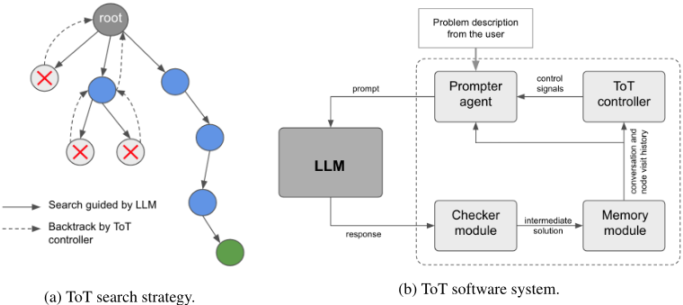
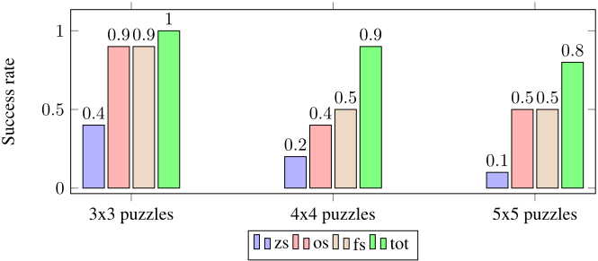

大语言模型引导的 Tree-of-Thought（思维树）
自回归 LLM 在需要长期规划的长程推理（System-2）任务上容易因缺乏逐步校验和无法回溯而累积错误。该论文提出 Tree-of-Thought（ToT）框架：在 LLM 外部增加 prompter agent、checker module、memory module 与 ToT controller 四个模块，通过多轮对话把问题求解组织成树搜索——LLM 只负责生成下一步中间解（短程推理），checker 校验其有效性，memory 保存对话与搜索树状态，controller 在出错或卡住时显式回溯到父/祖先节点换方向重试；controller 与 prompter 还可实现为策略网络并用 REINFORCE 交替训练。在自建的 3x3/4x4/5x5 Sudoku 基准上，基于 gpt-3.5-turbo 的 ToT 求解器解出全部 3x3 题目，4x4、5x5 成功率分别比 one-shot/few-shot CoT 基线高 80% 和 60%。对团队而言，这是'用 harness 工程弥补 LLM 推理短板'的代表性架构，其回溯控制、状态记忆与结构化提示设计可直接借鉴到 Agent 循环与可靠性工程中。
自回归 LLM 在'长程推理'任务上表现受限，论文归纳两个根因：一是生成过程缺乏显式的逻辑正确性检查，小错误随 token 生成被放大且难以恢复；二是解的生成是线性的，无法像人类求解者那样在推导出错或陷入僵局时回溯到之前步骤尝试其他方向。论文旨在通过系统化框架弥补这两个短板，提升 LLM 解决复杂数理逻辑问题的成功率。
提出 ToT 框架，在 LLM 之外增加四个模块协同多轮对话求解：prompter agent 按模板生成提示并要求 LLM 以结构化 JSON 返回下一步（便于 checker 解析）；checker module（规则式或神经网络式）校验中间解有效性；memory module 保存对话历史与搜索树状态以支持回溯；ToT controller 监控搜索，在当前节点被判无效或探索子节点数超过阈值时发出回溯信号。整体可视为以 LLM 为步生成启发式的树搜索算法：LLM 只做擅长的短程推理，由外部 checker 与 controller 提供校验与回溯，从而恢复错误并扩大解空间探索。controller 与 prompter 可进一步实现为基于 self-attention/FFN 的策略网络，用改造的 REINFORCE 算法交替训练（奖励为求解成功 +1 / 失败 -1）。Sudoku 实现中 checker 与 controller 均为规则式（无效即回溯、探索超过 5 个子节点即回溯），LLM 为 gpt-3.5-turbo。
3x3 Sudoku 基准（10 题）：ToT 求解器解出全部题目；论文称成功率比第二名提升 11%
4x4 基准（10 题）：ToT 在最大对话轮数（100 轮）内未能解出其中 1 题，成功率仍比 one-shot 与 few-shot 求解器高 80%
5x5 基准（10 题）：ToT 有 2 题未解出，成功率比 one-shot 与 few-shot 求解器高 60%
基线表现：zero-shot 在三个基准上均最差；提供 CoT 示例的 one-shot/few-shot 求解器在较大规模题目上成功率降至约 0.5
实验设置：LLM 为 gpt-3.5-turbo（temperature=1），最大对话轮数设为 100
相比 CoT、self-consistency、STaR 等线性生成或采样筛选方法，以及 AutoGPT、ReAct、Reflexion 等 agent 方法（作者自述与后者共享 memory 模块、自动提示生成等思路），ToT 的独特之处是引入可显式执行回溯的 ToT controller：把 LLM 定位为树搜索的步生成启发式，只承担其擅长的短程推理，而由外部 checker 与 controller 负责正确性校验与回溯，使系统能从错误中恢复并探索更大解空间；此外提出用策略梯度（REINFORCE）联合训练 controller 与 prompter 的策略网络，并展望用 self-play/'quizzer' 模块自动生成训练题目。
相关度级别：high
命中能力域：3.3 Agent 架构与工具使用 | 3.2 提示工程 | 3.1 上下文工程与记忆
理由：直接命中 3.3：ToT 是典型的 Agent harness 设计——LLM 生成、checker 校验、controller 决定继续或回溯的执行循环，正是团队关注的'Agent loop 与 harness 设计、规划与反思、单 Agent 执行可靠性'核心技术。同时命中 3.2：prompter agent 的提示模板设计、强制结构化 JSON 输出以便下游解析校验、基于策略网络从候选池自动选择 in-context 示例，均属提示技术与提示资产管理范畴。命中 3.1：memory module 保存对话历史与搜索树状态、回溯时恢复先前状态，是 Agent 记忆系统的具体形态。论文整体思路是'用工程化外挂模块弥补模型短板而非改模型'，与团队'把模型用好'的定位完全一致。需说明：论文虽自称 multi-agent 框架并用 MARL 训练，但实质是单个 LLM 加辅助模块的 harness，并非多个 LLM Agent 间的协作与通信，故不匹配 3.4；其评测规模小且非评测方法学贡献，也不匹配 3.5。
建议动作：深入精读并做内部分享
arXiv:2305.08291v1 [cs.AI] 2023年5月15日
Jieyi Long
Theta Labs, Inc. 美国加利福尼亚州圣何塞，95128 jieyi@thetalabs.org
在本文中，我们提出了思维树（Tree-of-Thought, ToT）框架，这是一种旨在提升自回归大语言模型（LLM）问题求解能力的新方法。ToT 技术的灵感来源于人类思维通过试错方式解决复杂推理任务的过程。在这一过程中，人类思维通过树状的思维过程探索解空间，并允许在必要时进行回溯。为了将 ToT 实现为一个软件系统，我们为 LLM 增加了额外的模块，包括提示器 Agent（prompter agent）、检查器模块（checker module）、记忆模块（memory module）以及 ToT 控制器（ToT controller）。为了求解给定的问题，这些模块与 LLM 进行多轮对话。记忆模块记录问题求解过程中的对话与状态历史，使系统能够回溯到思维过程的先前步骤，并从那里探索其他方向。为了验证所提出技术的有效性，我们实现了一个基于 ToT 的数独谜题求解器。实验结果表明，ToT 框架能够显著提高数独谜题求解的成功率。我们基于 ToT 的数独求解器实现已在 GitHub 上发布：https://github.com/jieyilong/tree-of-thought-puzzle-solver 。
基于自注意力机制的自回归大语言模型（Large Language Models, LLMs），如 GPT-4，近来风靡全球 [1, 2, 3, 4, 5, 6]。这些 LLM 在许多此前被认为极其困难甚至不可能完成的任务上表现出色。例如，它们能够处理各种逻辑与数学推理任务，尤其是那些仅需几步即可得出结论的“短程推理”（short-range reasonings）任务 [6, 7]。如此卓越的能力甚至引发了这样的猜测：通用人工智能（Artificial General Intelligence, AGI）的早期形态可能已经出现 [7]。然而，当今的 LLM 在某些领域仍然表现出局限性，尤其是对于需要长期规划与解空间探索的“长程”（long-range）推理任务 [7]。当向 GPT-4 这样的 LLM 提出具有挑战性的问题求解任务时，尤其是所谓的 System-2 推理问题 [8]，模型并不总能成功。尽管生成的答案可能指向正确的方向，但其推导过程常常包含逻辑错误。我们假设有两个主要因素限制了 LLM 的问题求解能力：
缺乏正确性检查（Lack of correctness checking）：为确保正确性，人类求解者的一种良好做法是在问题求解过程的每一步都执行验证程序，从而保证最终解的可信度。相比之下，自回归语言模型在基于先前 token 生成新 token 的过程中，并不会显式地执行逻辑正确性检查。这限制了模型纠正自身错误的能力。随着模型生成更多 token，微小的错误可能被不断放大，从而导致解的质量迅速劣化，并使模型难以从错误中恢复。
预印本。审稿中。

线性生成的解：如上所述，大语言模型（Large Language Model, LLM）通常基于先前的 token 序列来生成 token，而不会进行回溯编辑。相反，当人类求解者尝试解决一个问题时，如果某个推导步骤出错，或者她陷入僵局、无法继续向最终答案推进，她可能会回溯到之前的步骤。菲尔兹奖得主陶哲轩（Terence Tao）曾分享过他解决数学难题的经验 1：“我小时候对数学抱有一种浪漫化的想象，认为难题都是在灵感迸发的‘尤里卡’（Eureka）时刻被解决的……而对我来说，过程总是：试试这个。这能让我前进一部分，或者行不通。现在再试试这个。哦，这里有个小捷径……只要你在上面钻研得足够久，总会在某个时刻碰巧从‘后门’迂回地在这道难题上取得进展。到最后，通常就是：哦，我把问题解决了。”他所描述的这种解题过程是一种树状的思维过程，而非线性的思维链（chain-of-thought, CoT）[9]。从计算复杂性的角度来看，线性响应生成的局限性也是显而易见的。自回归 LLM 所能执行的计算步数关于其输入长度是多项式级的。除非 P = NP 成立——而这与被广泛接受的信念相矛盾——否则，将存在自回归 LLM 无法求解的 NP 问题。
受自回归大语言模型（LLM）上述两个缺点的启发，我们提出了一个新颖的框架，该框架在 LLM 的基础上增加了若干附加模块，其中包括一个自动的“提示智能体”（prompter agent）。该框架采用了一种我们称之为思维树（Tree-of-Thought, ToT 2）的解搜索策略。该策略通过 LLM 与提示智能体之间的多轮对话来求解问题。图 1a 给出了 ToT 搜索策略的可视化描述，其中 LLM 在引导解的搜索方面发挥着关键作用。为了更具体地说明，我们不妨假设待求解的问题是数独谜题的一个实例。“根”节点表示初始状态，对应于人脑刚刚通读完问题描述并开始思考过程的时刻。图中的蓝色节点表示一个有效的部分解，LLM 可将其作为生成下一步搜索步骤的基础。在数独谜题求解的情境下，这意味着将一个部分填充的数独棋盘呈现给 LLM，并让 LLM 再填入几个格子。其原理在于，像 GPT-4 这样的 LLM 已在海量文本语料上完成训练，其中包含许多数独谜题的解法。给定一个部分填充的棋盘，LLM 很可能能够识别出其中的模式，并就如何遵循数独规则继续推进提供有用的见解。因此，由 LLM 引导的搜索极有可能比暴力搜索高效得多。在图中，由 LLM 引导的搜索步骤用实线箭头表示。然而，LLM 生成的这些步骤并不能保证在逻辑上总是正确。因此，我们引入了一个“检查器模块”（checker module）来执行正确性检查。在图 1a 中，带有"X"标记的灰色节点表示一个“死端”（dead-end），即被检查器模块判定为无效的部分解。对于数独而言，这意味着部分填充的棋盘违反了数独规则。如果当前节点无效，显然我们需要返回到父节点或某一祖先节点以纠正错误。这可以由一个名为“ToT 控制器”（ToT controller）的模块来协调，该模块负责监督 ToT 搜索。凭借回溯能力，系统可以重新生成解，从而从错误中恢复。此外，即使当前节点有效，如果系统在该节点上停滞过久，ToT 控制器也可以发出回溯信号，以探索其他可能的解。这类似于这样一种情形：人脑意识到沿某一特定方向不存在通往最终解的可行路径，从而促使她改变方向并探索其他路线。这一过程持续进行，直至找到完整解（在图中由绿色节点表示），或达到预先指定的最大对话轮数。
1 https://newsroom.ucla.edu/releases/Terence-Tao-Mozart-of-Math-7252
2 "tot" 一词意为幼儿，这是一个有趣的类比，因为本工作是对利用语言模型实现自动化问题求解之潜力的初步探索。
需要注意的是，尽管上述讨论以数独求解作为具体示例来阐述我们的主要思想，但 ToT 框架有可能应用于更一般的数学和逻辑推理任务。例如，在数学定理证明的场景中，完整解对应于完整的证明，共包含 n 个推导步骤；而部分解则指这些步骤的一个子集，具体而言是前 k 个步骤，其中 k 小于 n。检查器（checker）验证给定部分证明在逻辑上的正确性。与此同时，提示智能体（prompter agent）和 ToT 控制器可以向 LLM 提供提示和建议，鼓励其思考后续的证明步骤，或在必要时探索定理证明的不同方向。
为了评估 ToT 框架的有效性，我们实现了一个基于 ToT 的数独谜题求解器，并在我们创建的一组数独谜题基准测试（benchmark）上对其进行评估。如第 4.2 节的实验结果所示，ToT 框架能够显著提高数独谜题求解的成功率。
本文其余部分的组织结构如下。第 2 节回顾相关文献，并将我们的方法与最相关的工作进行比较。第 3 节给出 ToT 系统架构的细节。第 4 节描述我们对基于 ToT 的数独谜题求解器的实现，并给出实验结果。最后，第 5 节讨论本工作的局限性以及 ToT 框架未来可能的扩展方向。
构建能够进行推理的智能系统，长期以来一直是人工智能的主要目标之一 [10, 11, 12]。大语言模型（large language model, LLM）的最新进展，尤其是对其涌现特性和上下文学习（in-context learning）能力的发现，为机器推理开辟了一条新的途径 [6, 7, 9]。研究发现，使用思维链（chain-of-thought, CoT）及其他提示来引导语言模型，可以使其输出针对数学和逻辑推理任务的分步解决方案 [9, 13]。在这些发现的基础上，近期的研究还探索了采样多个解决方案，并利用自洽性（self-consistency）或基于复杂度的准则来确定最优响应的做法 [14, 15]。此外，还有实验对不同提示的性能进行了评估 [15]。自学推理器（self-taught reasoner, STaR）[16] 是一种让 LLM 生成推理链并丢弃那些产生错误答案的推理链的技术。随后，使用剩余的有效推理链对模型进行微调。
尽管这些技术展现出很高的潜力，但它们往往需要人工参与。例如，思维链式的提示技术需要精心手工构造的示例，因此难以扩展。于是，研究人员开始探索自动生成提示的可能性。该领域的早期探索包括 AutoPrompt [17]、前缀微调（prefix-tuning）[18] 以及参数高效的提示微调（parameter-efficient prompt tuning）[19]。近来，这一研究方向受到了更多关注。在近期的一项研究 [20] 中，作者尝试训练验证器（verifier）来检查 LLM 针对给定数学问题所给出的解决方案在逻辑上是否正确。如果训练出的验证器能够有效评判 LLM 的输出，它将为提示评估提供另一条途径。自动提示工程师（Automatic Prompt Engineer）[21] 研究了一种从模型生成的候选提示集合中选出最佳提示的方法。[22] 提出了三阶段的“增广-剪枝-选择”（augment-prune-select）方法：该方法首先生成多个思维链候选，然后根据推导出的答案是否与真实答案（ground truth）相符来进行剪枝；最后，使用基于策略梯度（policy gradient）的方法从候选池中选出若干推理依据链（rationale chain）的最优组合，用于 CoT 提示。
3
就在最近，研究人员也开始将注意力转向利用额外的 Agent 来增强 LLM，以实现各种目的。这也是与我们当前工作最为相关的研究领域。AutoGPT [23] 是一个将 GPT-4 与额外模块（包括执行 Agent 和记忆单元）相结合的程序。它能够将 LLM 的“思维”串联起来，从而自主地实现用户设定的任何目标。PromptPG [24] 提出了一种方法，能够通过策略梯度从少量训练数据中学习选择上下文示例（in-context examples），以用于提示学习。PromptPG Agent 学习从候选池中寻找最优的上下文示例，其目标是在与 GPT-3 环境交互时，最大化在给定训练示例上的预测奖励。DEPS [25] 是一种利用多步推理和子任务纠错来处理具有长程依赖的复杂任务的方案。由于能够在一次尝试中为子任务中的错误提供解释，DEPS 表现出了卓越的性能。ReAct [26] 是一种利用 LLM 中存在的涌现特性（例如言语推理轨迹）来使 Agent 能够进行推理并采取行动的方法，从而在不同的基于文本的基准测试（benchmark）上取得了令人瞩目的性能。在 ReAct 的基础上，Reflexion [27] 是一种为 Agent 配备动态记忆和自我反思能力的方法，能够改进其已有的推理轨迹以及选择特定任务动作的能力。为了实现完全自动化，该方法设计了一种简单而有效的启发式规则，使 Agent 能够识别幻觉实例并防止重复的动作序列。我们的方案与这些方法存在一些共同之处，例如使用记忆模块以及利用额外的 Agent 进行自动提示生成。然而，我们的方法的独特之处在于引入了一个 ToT 控制器，该控制器能够在必要时显式地执行回溯。这不仅使系统能够从错误中恢复，还有可能扩大解的搜索空间。
图 1b 展示了实现 ToT 框架的软件系统。如前所述，该系统集成了若干能够增强大语言模型（LLM）问题求解能力的组件，包括提示器 Agent（prompter agent）、检查器模块（checker module）、记忆模块（memory module）以及 ToT 控制器。
问题求解过程从用户输入问题描述开始。随后，提示器 Agent 将问题转发给 LLM，并附带额外的提示文本，以鼓励 LLM 给出中间解，而不是试图一次性得到完整解。在收到 LLM 的响应后，系统会调用检查器模块来检查所生成的中间解的有效性。如果该中间解通过了正确性检查，它将被解析并存储到记忆模块中。接着，提示器 Agent 会根据记忆模块的内容生成一条提示，以鼓励 LLM 生成下一步。反之，如果 LLM 生成了无效的中间解，ToT 控制器将激活提示器，向 LLM 提供提示并要求其重新考虑。请注意，一般而言，有效的中间解并不总能导向正确的最终解。为了避免陷入停滞，ToT 控制器会持续监控搜索过程，并决定是继续从当前节点尝试，还是回溯到父节点或某个祖先节点并探索其他方向。
ToT 策略可以看作一种树搜索算法，它利用 LLM 作为生成搜索步骤的启发式方法。在这种设定下，LLM 仅用于“短程推理”（short-range reasoning）任务，即推导下一个中间解，而这类任务已被证明对 LLM 具有较高的成功率 [7]。另一方面，通过引入检查器，系统更有可能在生成解的过程中发现自身所犯的错误。此外，通过允许系统从一个有效但在某种程度上“无望”的中间解进行回溯，系统能够探索更大的解空间，从而增强了系统整体的“长程推理”（long-range reasoning）能力。因此，ToT 框架兼取两者之长。此外，这种多轮对话技术增加了系统可以执行的计算步骤数量。因此，依据计算复杂性理论中的时间层次定理 [28]，与仅依靠同 LLM 进行单轮对话相比，ToT 框架能够扩大潜在可求解问题的范围。
在本节中，我们将更详细地介绍 ToT 软件系统的各个组件。
检查器模块（Checker Module）。检查器模块既可以基于规则实现，也可以实现为深度神经网络。对于那些存在显式多项式时间正确性检查算法的问题（即 NP 类问题），可以实现基于规则的检查器。许多重要的数学和逻辑问题都属于这一类，例如方程求解、多项式因式分解、3SAT，以及数独（Sudoku）之类的谜题。采用基于规则的检查器时，ToT 软件可以被视为一种混合系统，它允许将先验知识（例如数独规则）显式地编码到由神经网络驱动的系统中。另一种方案是训练并使用基于神经网络的分类器作为检查器 [20]。这对于难以实现基于规则的检查器的问题尤其有用，例如检查某个数学证明是否正确。
记忆模块（Memory Module）。记忆模块可用于存储 LLM 与提示器智能体（prompter agent）之间的完整对话历史，以及其他对问题求解有用的补充数据。所存储的数据可以作为提示器智能体为 LLM 生成有用提示的信息来源。
ToT 控制器（ToT Controller）。ToT 控制器负责监督整个 ToT 搜索。它可以通过多种方式实现。它可以简单到只编码两条规则：1）如果检查器认为当前的部分解无效，则回溯到父节点；2）如果当前的部分解有效，但 ToT 搜索树已经探索了其 C 个子节点却仍未找到最终解，则回溯到父节点。其中 C 是一个预先配置的整数。
更高级版本的 ToT 控制器可以采用策略网络（policy network）来确定回溯策略。该网络的输入包括最近的搜索历史，即由搜索树中最后访问的 k+1 个节点组成的序列 s i - k , .., s i - 1 , s i（其中 k 是一个超参数）。该网络还接收 c i，这是一个布尔变量，用于指示检查器模块是否认为当前节点 s i 有效。我们可以从该策略中采样以确定下一个动作 a i：
1: 输入：训练集 P train，训练轮数 N
2: procedure REINFORCE( P train , N )
3: 随机初始化 ToT 控制器策略 π t ρ
4: 随机初始化 Prompter agent 策略 π p θ
5: for epoch = 1, 2, .., N do
6: 若 epoch 为偶数，则 π w ← π t ρ，否则 π w ← π p θ ▷ 仅更新被选中的策略，固定另一个
7: for p i ∈ P train do
8: r i ← reward ( ToTSystem ( p i )) ▷ 尝试求解问题 p i 并获得奖励 r i
9: w ← w + α ∇ w log π w r i
10: end for
11: end for
12: end procedure
与 ToT 控制器类似，我们也可以将 prompter agent 实现为一个策略网络，该网络能够基于当前的部分解和对话历史生成提示（prompt）。首先我们将提示模板定义如下：prompt _ tmpl = generic _ tmpl || ' Here are a few examples: [in-context learning examples] .'，其中 || 是字符串拼接运算符。变量 [in context learning examples] 是针对所求解问题的上下文学习（in-context learning）示例，可由 prompter 策略网络从一组候选中选取，类似于 PromptPG 方法 [24]。其基本原理是：给定当前以及最近尝试过的中间解，某些上下文学习示例作为下一步的提示可能比
在前几节中，我们描述了多智能体 ToT 框架。本节将深入探讨如何训练这些 Agent，尤其是 ToT 控制器与 prompter Agent 的策略网络。尽管文献中已提出了许多多智能体强化学习（MARL）算法 [29, 30, 31]，但在本工作中，我们采用了一种相对简单的方法，即使用 REINFORCE 算法 [32] 的改进版本来直接训练 ToT 控制器与 prompter Agent 的策略网络。更先进的 MARL 算法将在未来加以探索。
首先，我们将 ToT 系统的一次运行（run）定义为如下过程：用户输入问题描述，ToT 系统尝试求解该问题，直到其认为问题已被解决，或达到预先指定的最大对话轮数。接下来，我们定义一次运行的奖励 r：若问题被正确解决，则 r = +1；否则，若系统输出了错误的解，或达到了最大对话轮数，则 r = -1。
6
思维树（ToT）系统训练完成后，我们便可以将其用于推理，即问题求解。算法 2 给出了使用 ToT 系统求解问题的伪代码。该过程从用户输入问题描述开始（第 1-2 行）。随后，prompter 模块使用面向用户输入的提示模板将用户输入转换为提示（第 3 行），例如：user _ input _ prompt = ' For the given problem: [problem description], please derive the first step, and return the step in the following JSON format {next_step: <next_step>} '。
接下来，系统将与大语言模型（LLM）进行至多 K 轮对话以求解问题（第 4 行）。在每一轮中，LLM 首先针对给定的提示生成一个响应（第 5 行）。然后，checker 对该响应进行分析并返回一个结果（第 6 行）。该结果包含从 LLM 响应中提取出的部分解，以及诸如 checker 认为该解是有效的最终解、有效的中间解还是无效的部分解等信息。如果该解是有效的最终解，算法直接将其返回（第 7-9 行）。否则，该结果会被存入 memory 模块（第 10 行）。ToT 控制器根据 memory 模块中的内容向 prompter 发出控制信号，例如回溯 l 层（第 11 行）。最后，prompter 根据该控制信号从 memory 模块中查找相关信息，并为 LLM 生成下一个提示（第 12 行）。如果在 K 轮对话内未能找到有效的最终解，算法将返回 nil，表示其未能求解该问题（第 14 行）。
本节介绍我们提出的 ToT 框架的评估方法与实验结果。我们的评估聚焦于基于 ToT 的数独（Sudoku）问题求解器。乍看之下，数独问题似乎只是几乎没有实际意义的智力题。然而，众所周知，在由 n × n 个块构成的 n² × n² 网格上的广义数独问题是 NP 完全（NP-complete）问题 [33]。如果 ToT 框架能够求解广义数独问题的实例（尽管可能需要指数级轮数的对话），那么原则上它也能够处理许多其他的数学与逻辑推理任务。事实上，将下文所述的实现重新调整用途以求解其他难题（例如 3SAT、3-coloring 等）也十分简单直接。下面我们首先描述该求解器的实现细节，然后介绍评估中所使用的测试套件以及实验结果。
7

基于 ToT 的数独求解器遵循第 3 节所述的通用框架，并针对数独问题做了一些特定的调整。它允许用户以自然语言输入数独谜题，例如：“请求解这个 4x4 数独谜题 [[3,*,*,2],[1,*,3,*],[*,1,*,3],[4,*,*,1]]，其中 * 表示待填充的单元格”。
我们用 Python 实现了第 4.1 节所述的基于 ToT 的数独求解器。由于数独规则精确且易于检查，我们为检查器（checker）模块采用了基于规则的方法。记忆（memory）模块存储提示器（prompter）与 LLM 之间的对话历史，以及一棵搜索树，该搜索树维护着 LLM 迄今生成的所有部分填充的数独棋盘。这样，当发生回溯时，便可以取回先前的棋盘配置。我们实现中的 ToT 控制器同样是基于规则的。当检查器判定当前节点无效，或搜索算法已探索当前节点的子节点超过 5 个时，它便返回搜索树中的父节点。最后，提示器智能体（prompter agent）使用上述通用模板的一个变体，其中 [problem description] 为用户输入的数独棋盘初始配置，[partial solution summary] 为搜索树中当前节点所表示的部分填充棋盘。本研究使用的 LLM 是 "gpt-3.5-turbo" 模型，可通过 OpenAI API 套件访问。在我们的实验中，温度（temperature）参数被设置为 1。
我们实现了四种基于大语言模型（LLM）的数独谜题求解器，并比较了它们的性能：1) 零样本（zero-shot）求解器（zs），直接将谜题描述提交给 LLM；2) 单样本（one-shot）求解器（os），除问题描述之外，还提供一个 3x3 数独谜题的思维链（chain-of-thought, CoT）风格分步求解过程作为示例；3) 少样本（few-shot）求解器（fs），提供多个带有 CoT 风格解答的示例；以及 4) 我们提出的思维树（Tree-of-Thought）求解器（tot）。我们构建了三个基准测试（benchmark），分别由十个 3x3、4x4 和 5x5 数独谜题组成。求解器的目标是用数字填充 n × n 的数独网格，使得每一行和每一列都包含从 1 到 n 的所有数字（在我们的实验中 n = 3, 4, 5）。
图 2 比较了不同的基于 LLM 的求解器在这三个 benchmark 上的成功率。这里的成功率一词指的是求解器在某个 benchmark 集合中成功求解的问题所占的比例。例如，如果某个求解器能够解决“3x3 谜题”benchmark 集合中 10 个问题里的 4 个，那么该求解器在这个 benchmark 集合上的成功率即为 0.4。正如预期，零样本求解器在全部三个 benchmark 集合上的表现都最差。加入 CoT 风格的分步示例能显著提升成功率，对 3x3 谜题尤其如此。这在预期之内，因为求解小尺寸的 3x3 数独谜题在很大程度上可以依赖“短程”推理能力——这正是 LLM 模型的强项——尤其是在提供了 CoT 风格提示的情况下。然而，随着谜题规模变大，单样本求解器和少样本求解器的成功率下降到 0.5 左右。这是因为求解更大的谜题需要反复试错，而正如前文所讨论的，LLM 通常缺乏这种能力。
相比之下，基于 ToT 的求解器展现出优于其他求解器的性能。对于 3x3 基准测试（benchmark）集，它成功求解了全部谜题。在两个基准测试集上，其成功率相比次优方法提升了 11%。对于 4x4 基准测试集，基于 ToT 的求解器在达到最大对话轮数（在我们的实验中设置为 100）之前，未能为 10 个谜题中的 1 个找到解。我们怀疑这是由于基于规则的 ToT 控制器能力有限所致。具体而言，基于规则的控制器无法感知当前部分填充的棋盘能否在不违反数独规则的前提下被补全，这降低了解搜索的效率。我们期望基于神经网络的 ToT 控制器会有更好的表现，我们将在本工作的未来扩展中对此加以验证。尽管如此，基于 ToT 的求解器的成功率仍比基于 one-shot 和 few-shot 的求解器高出 80%。最后，对于 5x5 谜题，基于 ToT 的求解器在达到最大对话轮数之前有 2 个谜题求解失败。即便如此，其成功率仍比基于 one-shot 和 few-shot 的求解器高出 60%。
在本文中，我们提出了思维树（Tree-of-Thought, ToT）框架，该框架通过额外的 Agent 和记忆模块来增强大语言模型（LLM），从而提升了数学问题求解任务的性能。为了评估该技术的性能，我们基于 ToT 框架实现了一个数独谜题求解器。当前实现的一个局限在于，它使用了包含自定义逻辑的基于规则的检查器，这使其较难适配到其他问题上。对于更通用的问题，例如基于规则的解答检查难以实现的一般数学与逻辑推理问题，未来的一个研究方向是探索基于神经网络或其他概率模型的检查器。此外，我们在本工作中开展的实验也使用了基于规则的 ToT 控制器，正如我们所指出的，其能力有限。未来，我们将实现基于神经网络的 ToT 控制器，这有望提升系统性能。另外，本工作所提出的基于策略梯度的训练算法相对简单，可能容易受到训练稳定性问题的影响。为了进一步优化 ToT 系统，可以采用更先进的多智能体强化学习算法，尤其是那些专为合作型 Agent 设计的算法。
另一个引人入胜的未来方向是研究利用“自博弈”（self-play）技术的潜力，使 ToT 系统能够发展出 LLM 训练文本语料库中不存在的新型问题求解策略。自博弈训练方法是一种强化学习技术，因 AlphaGo 和 AlphaStar [34, 35, 36] 等竞技博弈 Agent 的发展而得到推广，其中 AI Agent 通过与自己对抗来学习改进自身策略。如今的 LLM 通常采用自监督学习技术进行训练。在问题求解方面，它们可能存在局限，因为它们可能无法生成落在训练数据分布之外的样本（即新型问题求解策略）。换言之，它们可能无法“跳出固有思维框架”（think outside the box），而这是人类促进新知识发现的一项关键特质。与自监督学习相比，基于自博弈的强化学习使系统能够触及远超所提供训练样本的更广阔解空间，从而实现更大的提升。AlphaGo 及类似系统已经展现出设计出甚至超越人类专家所制定策略的能力。受这些实例的启发，在 ToT 系统训练中，我们可以不依赖于训练数据集 P train，而是引入一个“出题者”（quizzer）模块，由其自行提出问题描述，用于训练 ToT 控制器和 prompter Agent。值得一提的是，训练 AlphaGo 及类似系统的关键促成因素之一在于环境奖励可以被精确确定，因为判断对局结果是胜还是负十分简单直接。ToT 框架包含一个能够评估解正确性的检查器（checker），其功能类似于环境，对于具有明确定义解验证规则的问题而言尤其如此。因此，强化学习训练方法可以很容易地得到应用。我们推测，这种类似于自博弈方法的自我驱动学习方式，可能是一种有效手段，能够使 ToT 框架的问题求解能力超越 LLM 训练文本语料库中所提供的求解示例。